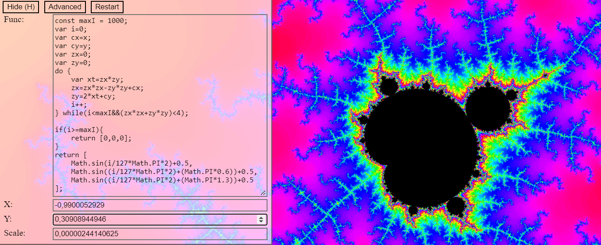
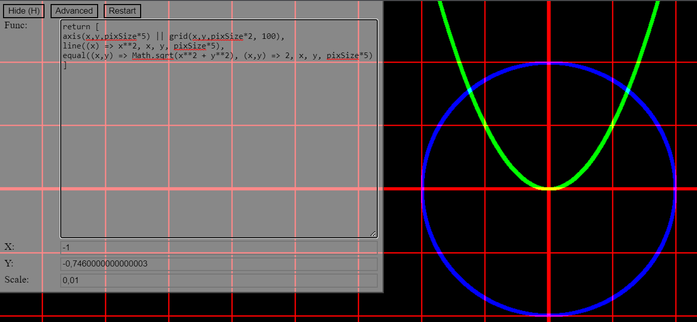
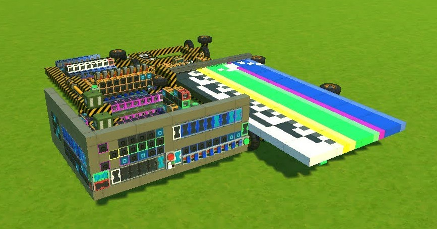

Game Jam game about thick flies
Fury Fly in the Witches' Kitchen is a local 2 player platformer game where you are a fly that is so thick that it can only jump. The theme of the Game Jam was '30 seconds', so after 30 seconds the kitchen will flood with deadly water.
The controls are WASD for player 1, and arrow keys for plater two. The goal is to stay alive as long as possible by nocking your opponent off the screen or into the water.
 This project was made together with three others in about 8 hours. Leah and Luuk did most of the pixel-art and pages for the main-menu and the win screen, while Jochem and I did the programming of the game itself.
This project was made together with three others in about 8 hours. Leah and Luuk did most of the pixel-art and pages for the main-menu and the win screen, while Jochem and I did the programming of the game itself.
Initially, we wanted this to become an online multiplayer game, which can be seen in some of the decisions in the code. The unused server.js and socket.js (for the client) are also still in the repo. But when multiplayer still wasn't working around one hour before the deadline, we decided to cancel online multiplayer and make it a local multiplayer game instead. At this point, all the platforming physics and graphics were already finished, but having two players in the same world was never tested before. So it was quite the surprise when it only took 15 minutes to make the two players function properly and the game was basically done and already surprisingly fun to play. We spent some more time polishing, slightly tweaking the physics and adding the awesome sound effects. After the Game-Jam I did some extra polishing and bugfixing, but the gameplay itself stayed the same.

Real time JavaScript function plotter
Codemaker's Plotter is my JavaScript real-time math plotting project.

It takes a JavaScript function as input, and plots the output of that function on the screen. It does this by executing the function for every pixel on the screen. The reason this can be done in real time is because of a dynamic resolution and because it uses multiple threads to render everything.
Sadly, it can't make use of the GPU because the functions are in JavaSctipt, and compiling that to webGL isn't really practical. JS was a bit of an arbritary choice, bit it is fast enough like this.
By default, the function will draw the Mandelbort set. But this plotter is capable of drawing any f(x,y) that outputs a color, number or boolean. Try this for example:
return x**2 + y**2 < 1 && x**2 > y/2
This function first creates a white circle with radius of 1, and then takes a bite out of it in the shape of the quadratic function y/2 = x^2.
But I also added some utility functions, and you can return an RGB array of booleans or numbers to create color. This last example demonstrates this:
return [
axis(x,y,pixSize*5) || grid(x,y,pixSize*2, 100), // create a thick axis, with thinner lines in red.
line((x) => x**2, x, y, pixSize*5), // draw a line where y = x**2 in green.
equal((x,y) => Math.sqrt(x**2 + y**2), (x,y) => 2, x, y, pixSize*5) // draw a line where the distance from the origin is equal to 2 in blue.
]

I still want to add axis as a defualt overlay, instead of a part of the input function. That way it is also easier to know what location you are looking at, and it will probably also be faster than the current in-function approach.
Programmable computer using in-game logic
My first YouTube video is that of a simple computer made in a video-game called Scrap Mechanic. The game features the basic logic gates (and, or, xor and the inverted variants) and allows you to connect them together to automate contraptions. Logic isn't the main selling point of the game, but still is quite powerful.
To my knowledge this is the very first published programmable computer made in Scrap Mechanic, and my YouTube video has inspired many others to build their own computers.
At the time I was 14 years old, and I built it in a single weekend. Though this short build time is mostly because of the computer's simplicity and because I had been thinking about how it would work for a week or two prior to actually building it.
The computer doesn't really have an instruction set. Instead, it only has one instruction: copy. This instruction copies the data from one of the sixteen registers to a different one. The trick is that some of these registers are connected to the components of the computer, so the first register is one of the inputs for the ALU, and another register is connected to the program counter allowing for jumping in your program. This single instruction architecture is very easy to build and modify/upgrade, especially with the spudgun/switch approach.
